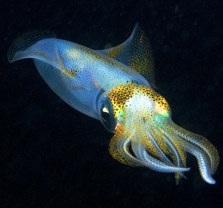
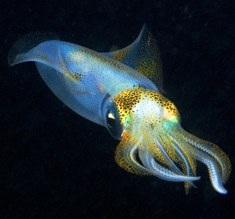

поверхня (0-10 метрів)

Чотирикрила летюча
Летючі риби рятуються від хижаків за допомогою польоту. Завдяки своїм великим грудним плавцям вони можуть долати до 80км/год і пролітати до 400 м!


Риба - Місяць
Найбільша сучасна кісткова риба. Досягає 3 метрів у довжину та ваги 1,5 тонни.
Може виникнути питання, як така велика та неповоротка риба ще не зникла? Вона відкладає більше ікри, ніж будь-яка інша хребетна тварина у світі. За один раз самка може відкласти до 300 мільйонів ікринок, що робить її абсолютним рекордсменом серед риб.
середня глибина (10-200 метрів)
-
-
Автор відео: 10 Hours Channel
Сині омари – це скарб. Їх колір - генетична мутація, через яку їхній організм виробляє надлишок білку. Мутація трапляється раз на 2 млн омарів!
Автор відео: Андрій ЛєляковМорські анемони мають отруйні щупальця, що вбивають дрібних риб. Риби-клоуни живуть серед них без шкоди, захищаючись від хижаків. Водночас вони приваблюють інших риб, які стають здобиччю анемони.
сутінкова зона (200-1000 метрів)

Риба - топор
Її тіло нагадує формою топор і має сріблястий колір.
Циліндричні очі дозволяють бачити далеко, а паща дає змогу ковтати їжу, яка опускається згори.
Риба - вудильник
На голові в самки є спец орган, схожий на лампу, що світиться завдяки бактеріям. Тільки самки мають цю лампочку, самці набагато менші і не здатні світити. Знайти партнера важко, тому самці, зустрівши самку, прилипають і стають частиною її тіла. Вона метає ікру — вони одразу її запліднюють.

Гримпотевіс
Ці риби мають м’яке, прозоре тіло, що дозволяє виживати в глибинах океану, витримуючи тиск і холод.
Їхній вигляд нагадує поєднання восьминога і риби.
глибоководні (1000+ метрів)


Живоглот чорний
У глибинах океану ця риба має великі щелепи й здатна ковтати здобич більшу за себе. Живоглот повільно пливе, відкривши рота, чекає, коли якась риба запливе йому в пасть. На хвості є світла пляма, яка приваблює "їжу".
Риба - ліхтарик
Риба виходить зі сховку тільки вночі. У неї два органи зі світними бактеріями. Вона не може вимкнути світло, але має орган, який може його закривати. Це дозволяє рибі різко "згаснути" й збити хижаків з пантелику.
 

Іскристий кальмар
Деякі кальмари мають світні органи з рефлекторами й лінзами, які видно крізь тіло. Інші види світяться завдяки бактеріям, що потрапляють у тіло ще на ембріональній стадії.
тестування рибних знань
Познайомимося перед тестом!
ІНСТРУКЦІЯ